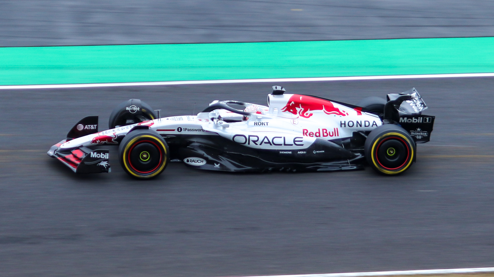
PADDOCK — A experiência da Fórmula 1 Temporada 2026 11 equipes · 22 pilotos
A arte
de ir mais
rápido.
Uma jornada pelo universo onde velocidade, engenharia e precisão se encontram.
O Grid 2026
Onze equipes, vinte e dois carros e uma temporada de regras novas. Esta é a largada.
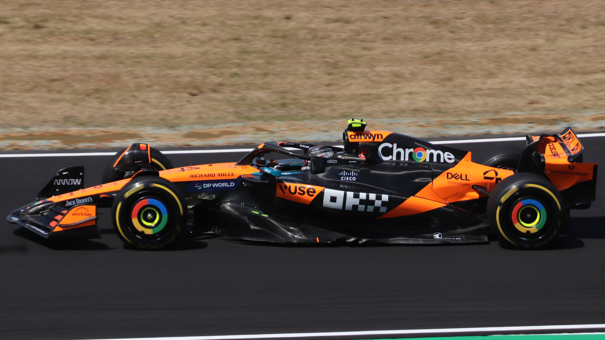
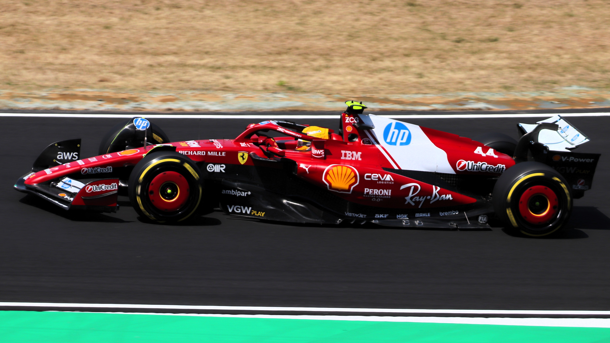
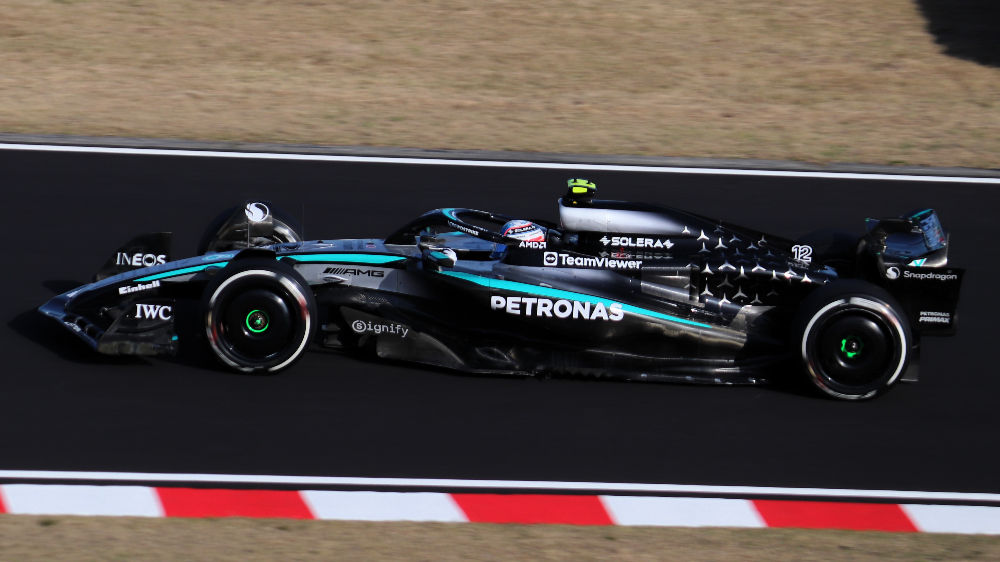
equipes em 2026: a Cadillac estreia e a Audi assume a estrutura da Sauber.
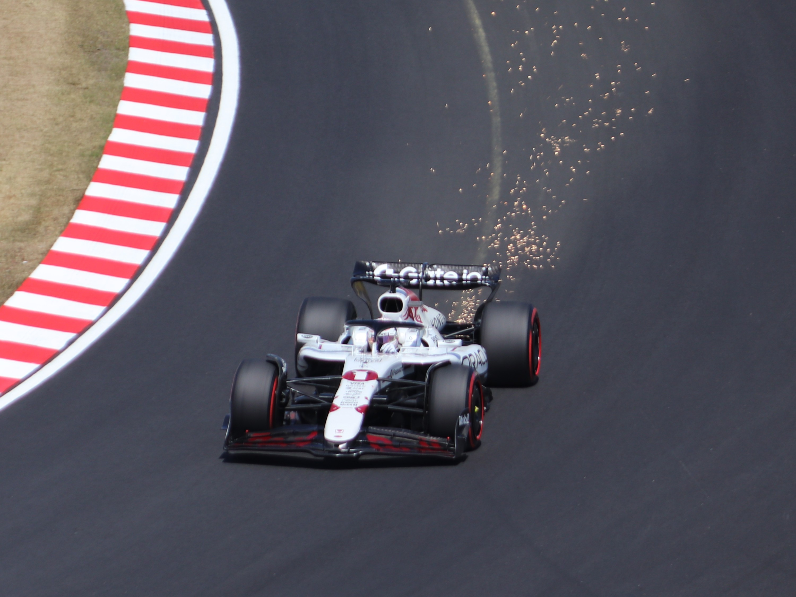
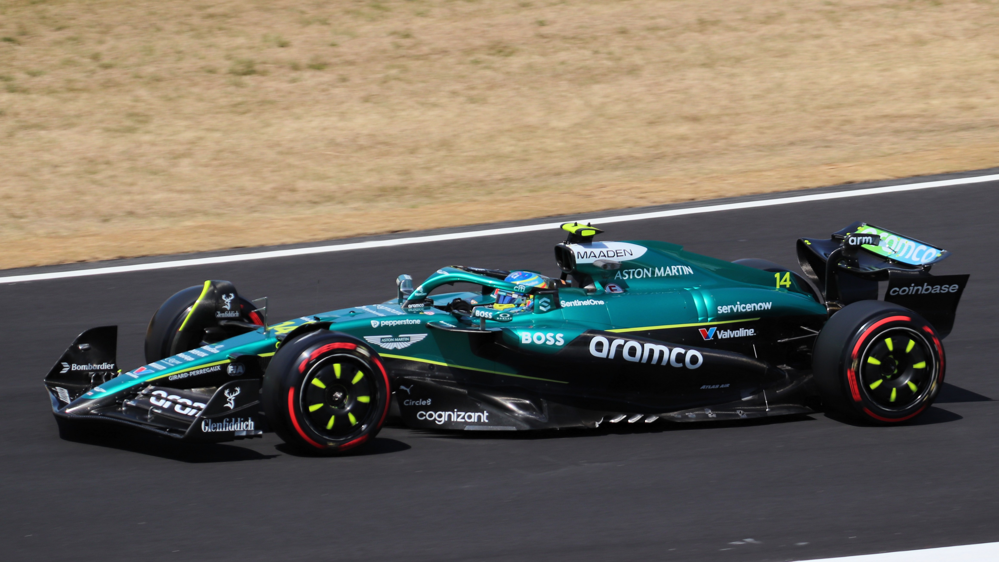
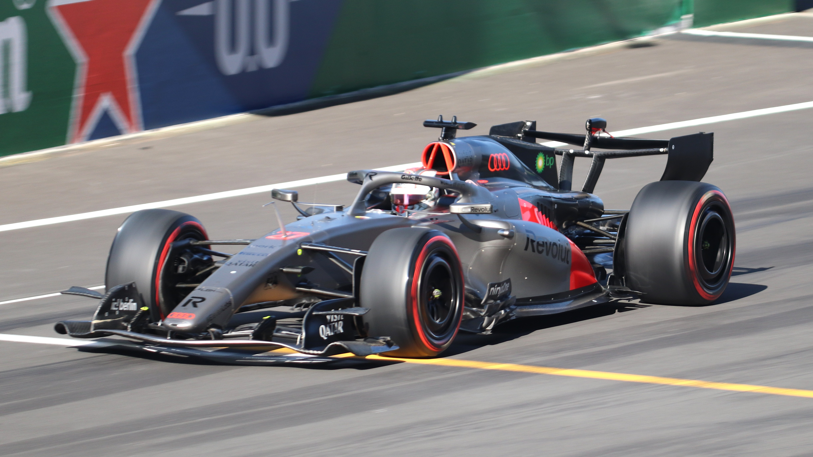
Na
Pista
Cada circuito tem personalidade própria. Passe o mouse (ou use o teclado) sobre a lista para trocar a fotografia.

Mais circuitos, largadas e pit stops no Arquivo.
Ver circuitosEngenharia
de ponta

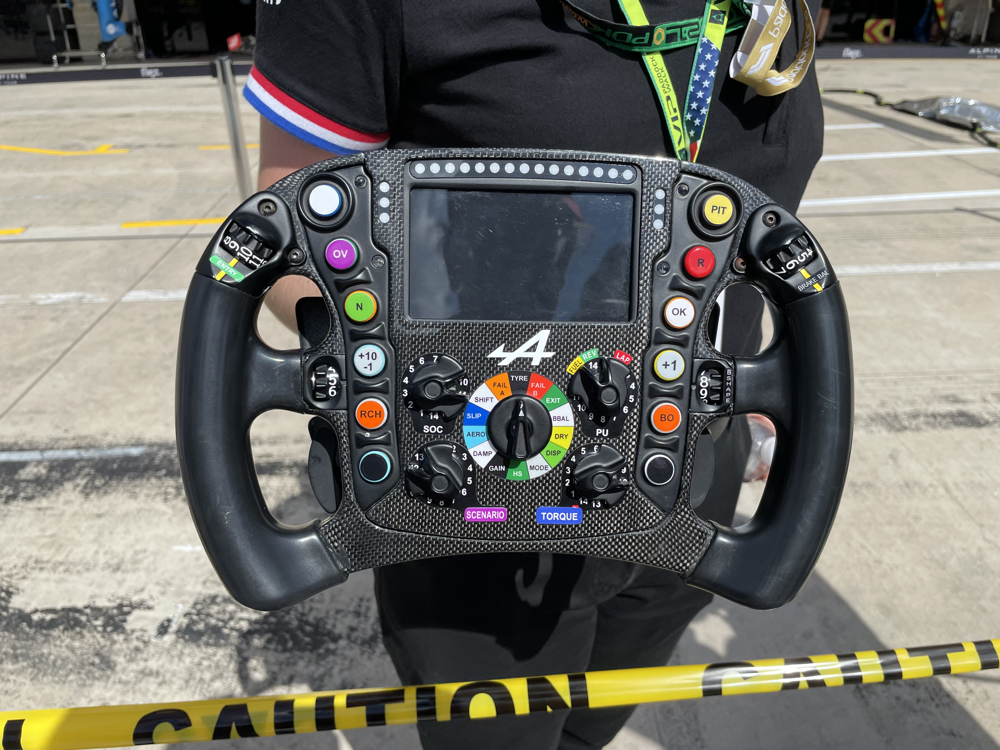
Um carro de Fórmula 1 é um conjunto de decisões de engenharia: cada curva da carroceria, cada grama e cada quilowatt têm um motivo. Em 2026 as regras mudaram quase tudo.
Aerodinâmica
Asas que se movem: abertas nas retas, fechadas nas curvas.
02Pneus e estratégia
Três compostos, duas paradas possíveis e muita matemática.
03Unidade de potência
Perto de metade da potência agora é elétrica.
peso mínimo do carro em 2026
potência elétrica do MGU-K
da potência, aproximadamente, vem do sistema elétrico
alinham no grid

Fora
da Pista
Longe da pista também tem corrida: preparar, consertar, esperar e comemorar.
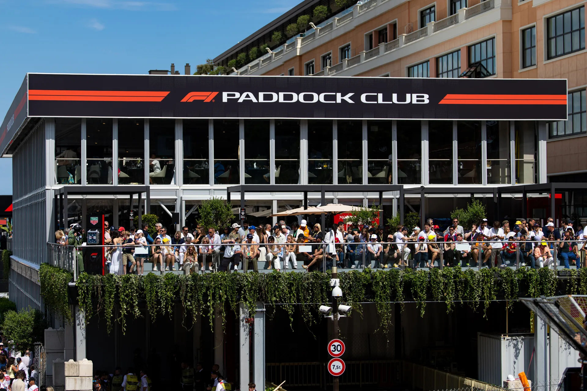

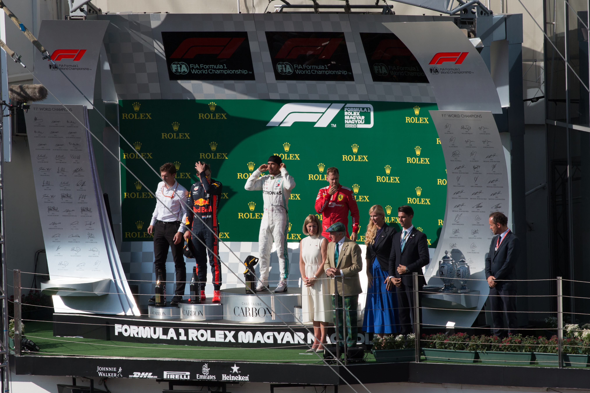
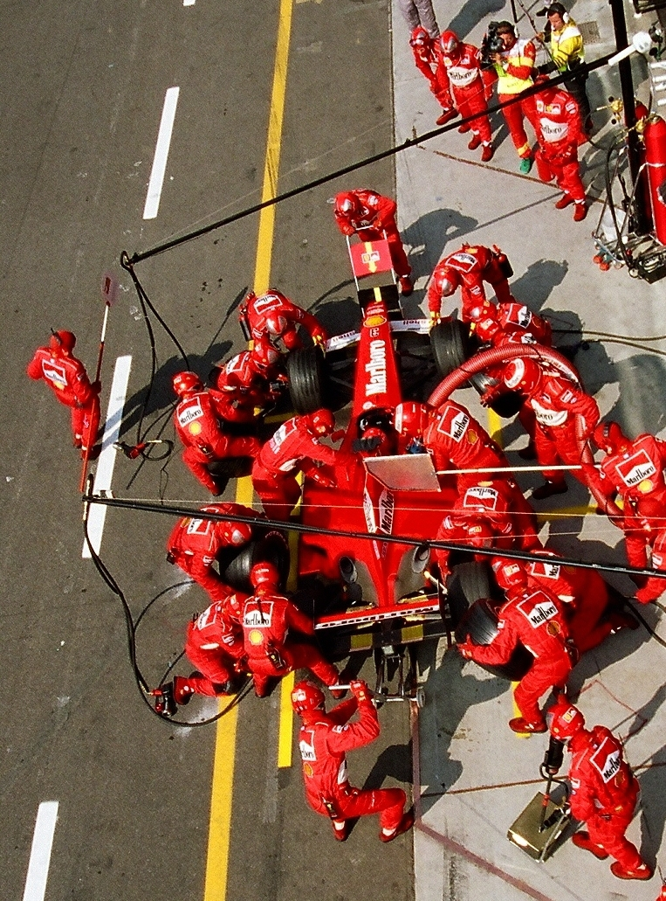
Antes de cada volta rápida existem centenas de pessoas e milhares de horas de trabalho. O lado humano da Fórmula 1
Arquivo
Paddock
Capacetes que viraram símbolo, carros de outras épocas e momentos que mudaram a categoria. Use os filtros e a busca para montar o seu próprio caminho pela galeria.
Abrir o Arquivo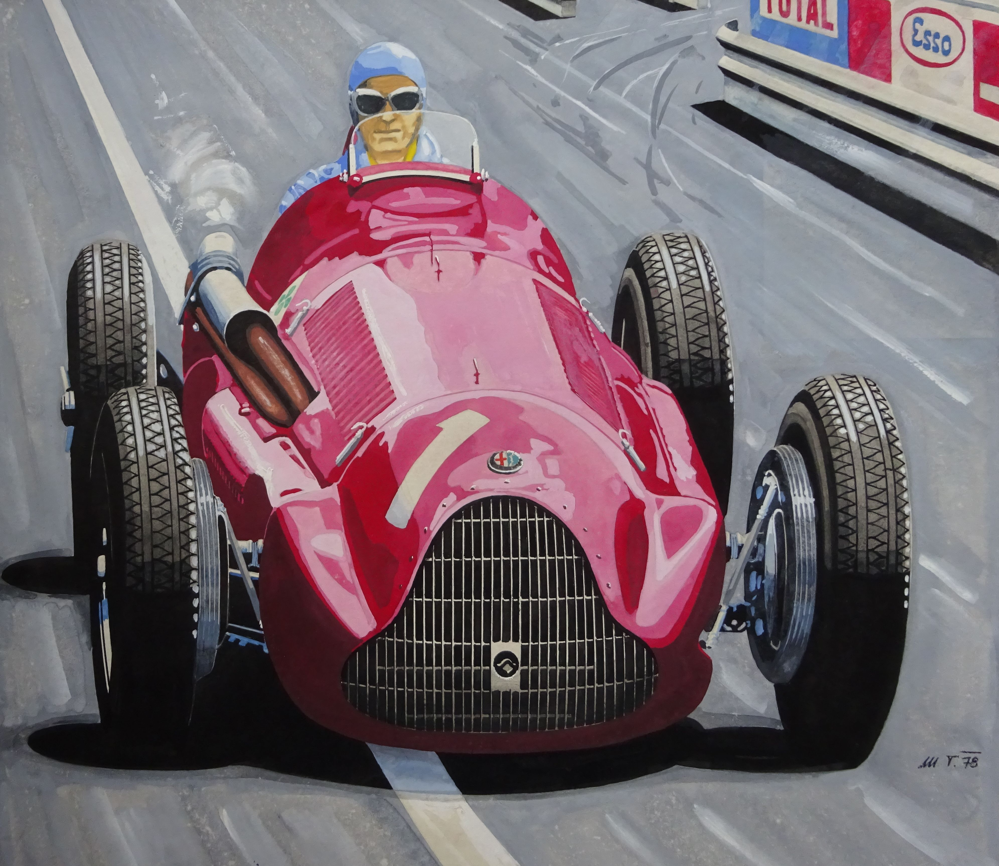
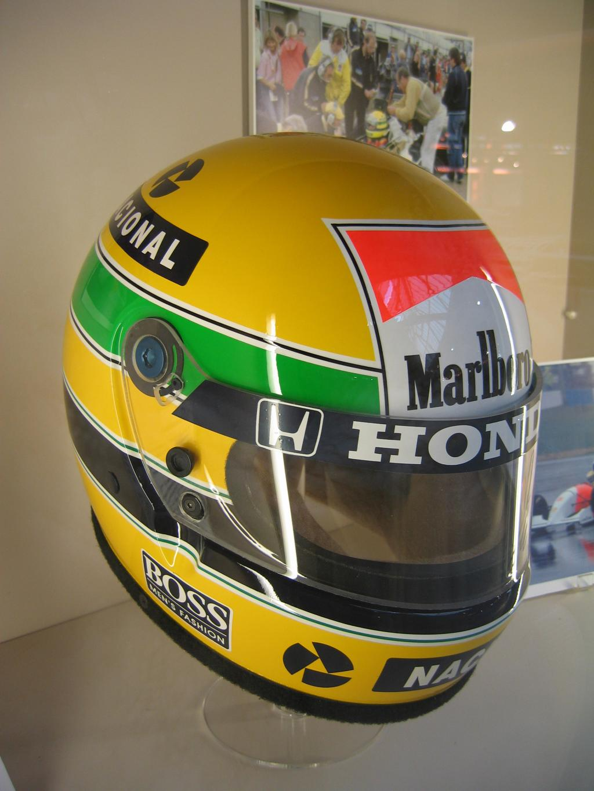
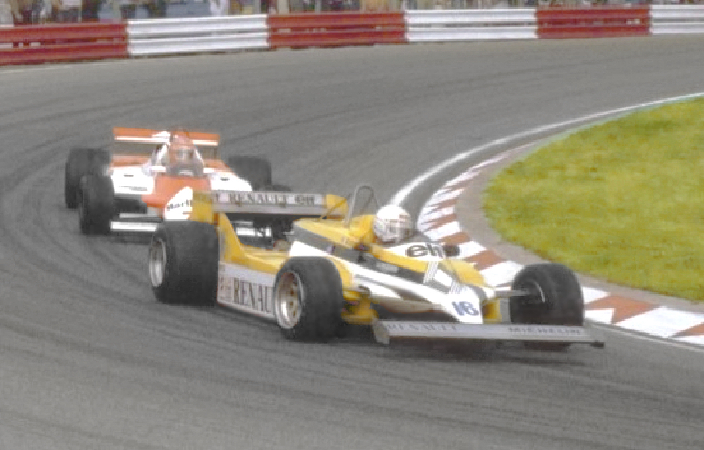
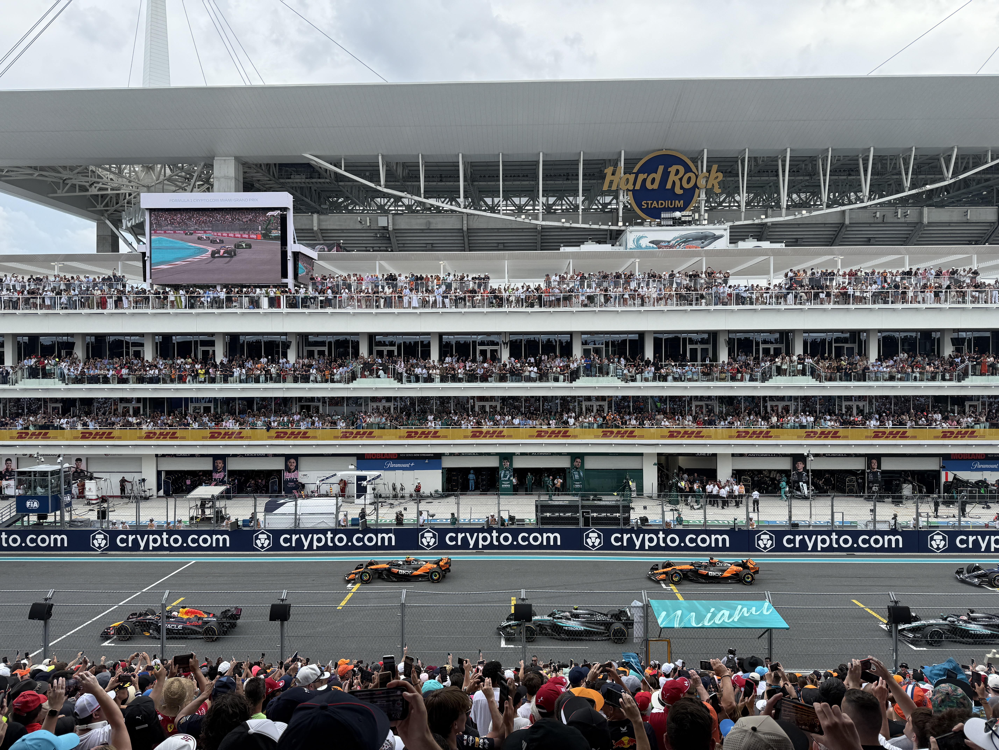
07 — Além da velocidade
Descubra
o paddock.
Quatro caminhos para continuar rolando.